📚 English Through TV · Visual Lesson
Learn Four Essential English Idioms from Friends: Plot, Phrasing, and Persuasion in “The One with the Hypnosis Tape”
A sitcom case study in which every storyline teaches a phrase you can use tomorrow, from call it off to talk someone out of.
Few television comedies have taught viewers as much everyday English as Friends. Its characters argue, flirt, confess, and scheme in the kind of natural phrasing that native speakers use without noticing. Interestingly, a single episode can contain an engagement between a young man and his former teacher, a diner tip far larger than any restaurant bill, and a sleep-learning cassette that goes spectacularly wrong. That mix of absurd premises and ordinary language is exactly what makes this episode such a valuable classroom resource.
The lesson behind this article is presented as an illustrated guide to The One with the Hypnosis Tape. It is important to understand that it does not ask you to memorize grammar tables. Instead, it lets three intertwined storylines do the teaching. Each plot is followed by vocabulary notes, idioms, and short comprehension tasks, so every phrase arrives attached to a character, a conflict, and a joke. By the end of this article, you will recognize four key expressions, understand why the characters choose them, and know how to use them in your own sentences.
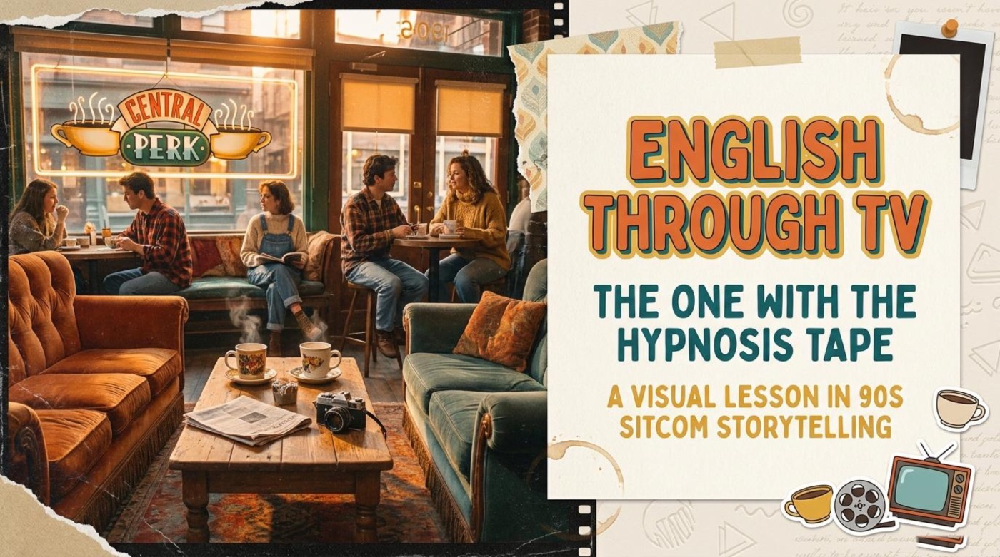
📚 Content and Context: The Anatomy of a Sitcom Episode
The essence of the material is simple to state and surprisingly rich to explore. The lesson argues that a well-built sitcom episode follows a predictable architecture. A dilemma appears, a catalyst pushes the characters into action, and a resolution closes the story with a laugh. Once you learn to spot this pattern, you can follow complicated plots far more easily, and you can describe them in English with confidence.
The episode uses this architecture three times. The lesson introduces its storylines under the heading “Three Stories, One Episode.” The three plots are called “The Unexpected Engagement” (Love & Age Gaps), “The Millionaire Customer” (Wealth & Dating), and “The Quit-Smoking Tape” (Habits & Hypnosis). Each one pairs a very human problem with a comic twist that keeps the audience engaged.
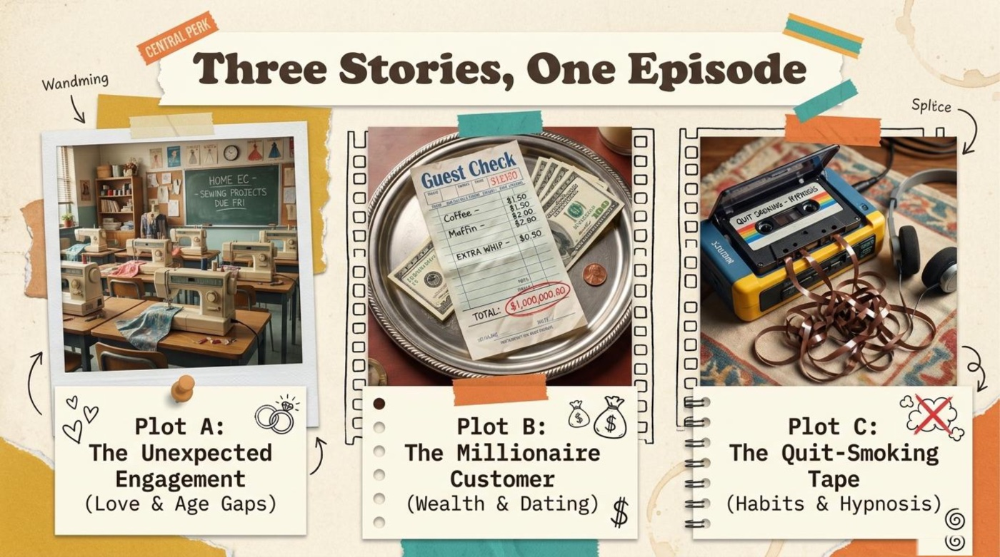
Pay attention to the vocabulary the lesson selects. Rather than teaching random words, the material focuses on expressions that appear naturally inside these plots. This choice matters, because phrases learned in context are retained far longer than isolated definitions. It should be noted that the episode does not simply tell a funny story. It shows how English speakers argue, persuade, and change their minds.
Key points for language learners
- Stories give phrases a reason to exist. Each idiom appears at the moment a character needs to cancel a plan, persuade a friend, hurry a decision, or describe a mess.
- Dialogue carries emotion. Phoebe’s objection and the friends’ sudden change of heart show how tone can change the meaning of an ordinary sentence.
- Humor depends on precise words. The jokes about the currency and the cheese sandwich work only when the listener understands the literal language first.
Plot A: The Unexpected Engagement
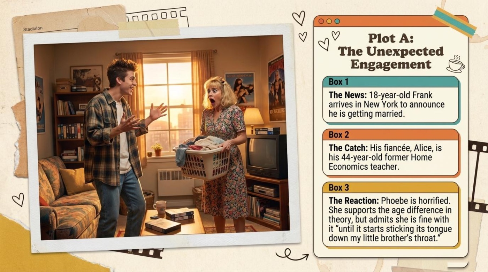
The first storyline begins with a shock. The lesson describes the news in plain terms: “18-year-old Frank arrives in New York to announce he is getting married.” The catch follows immediately, because “His fiancée, Alice, is his 44-year-old former Home Economics teacher.” The short, factual sentences keep the conflict easy to follow, and that clarity is a useful model for your own writing.
Phoebe’s reaction gives the scene its comic energy. The lesson reports that she is “horrified”, and she admits, with characteristic bluntness, that she is fine with the age difference “until it starts sticking its tongue down my little brother’s throat.” Notice how the joke works. She accepts the idea in theory, and one vivid image exposes her real discomfort. Everyday English speakers often use this kind of exaggeration to signal strong feeling without a long explanation.
📌 Practical advice: When you disagree with someone, name the specific concern rather than offering a vague complaint. Phoebe’s line works because it is concrete. Practice building one vivid, honest sentence of your own, and you will sound more natural than someone who simply says that something is wrong.
The resolution turns the conflict upside down. Phoebe asks her friends Ross and Joey to talk Frank out of the marriage, but the plan collapses. Instead, “Frank gives such a passionate speech about true love that his friends instantly change their minds.” The result is comic: the skeptics become supporters and agree to serve as the best man and the ring bearer.
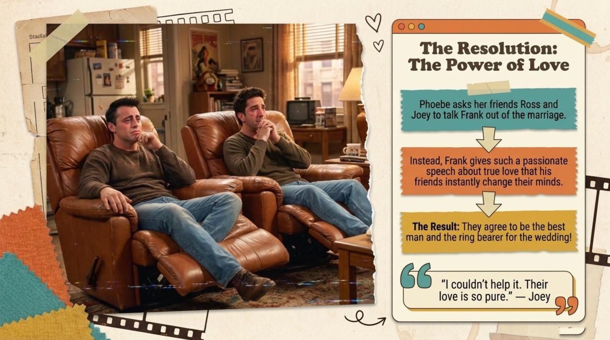
Joey captures the change in a single breath: “I couldn’t help it. Their love is so pure.” Pay attention to the phrase couldn’t help it. It means that a person cannot stop himself or herself from feeling or reacting in a certain way, and it explains why the friends’ convictions dissolve so quickly.
⚠️ Remember that the story exaggerates for comedy. Real relationships rarely change this quickly, so treat the scene as a language model rather than a guide to making personal decisions.
Plot B: The Millionaire Customer
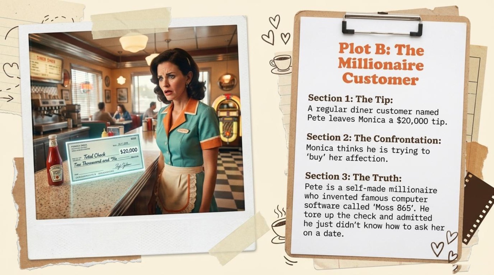
The second storyline begins in a diner, where Monica works as a waitress. A regular customer named Pete leaves her a $20,000 tip, an astonishing amount for a meal. The lesson records her suspicion plainly: “Monica thinks he is trying to ‘buy’ her affection.” The quotation marks around the word buy are important, because they signal doubt that money could ever be a sincere gesture. Remember that quotation marks in English often signal irony, hesitation, or a word used in an unusual sense.
The truth arrives in the lesson’s final section. Pete is “a self-made millionaire who invented famous computer software called ‘Moss 865’.” He tears up the check and admits that “he just didn’t know how to ask her on a date.” This twist reframes the entire plot. The enormous tip was neither an insult nor a bribe. It was an awkward attempt at courtship that grew far too large.
Pete then tries to make up for his nervousness with an extravagant gesture. Monica finally agrees to give him a chance, and he promises to take her to “a great little place for pizza.” The lesson describes the twist: “He flies her on a private jet all the way to Rome, Italy!” The gap between the modest promise and the grand reality drives the humor.
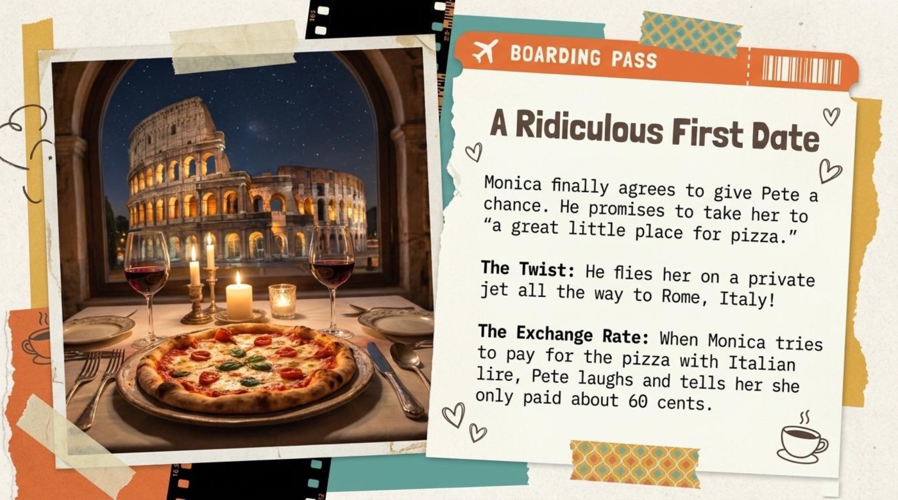
The joke continues at the table. When Monica tries to pay for the pizza with Italian lire, Pete laughs and tells her she paid “about 60 cents.” The punchline depends on the exchange rate. A currency with very large numbers can look tiny to a visitor who thinks in dollars, and that mismatch is the source of the laugh.
💡 Practical advice: When you read about money in English, notice both the number and the currency. Writers often build humor, and sometimes irony, on the difference between them.
Plot C: The Hypnosis Tape
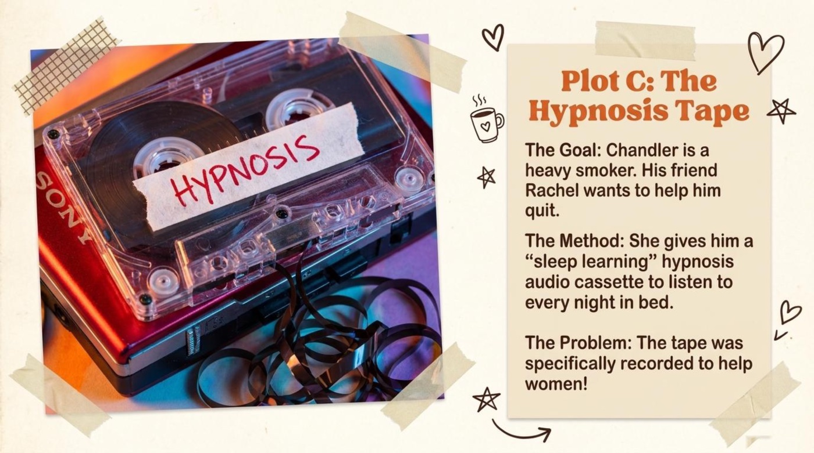
The final storyline turns to a bad habit. “Chandler is a heavy smoker. His friend Rachel wants to help him quit.” Her method is a “‘sleep learning’ hypnosis audio cassette to listen to every night in bed.” The lesson’s matrix later names this device as “A sleep-learning audio cassette”, which makes it the catalyst for the rest of the plot. Notice the phrase sleep learning. It names a belief that the lesson later invites learners to examine critically rather than accept automatically.
The problem hides inside a single word. The tape “was specifically recorded to help women!” Pay attention to the word specifically, because it signals that the message was designed for a different listener. A hypnosis recording is only as useful as its fit with the person who hears it.
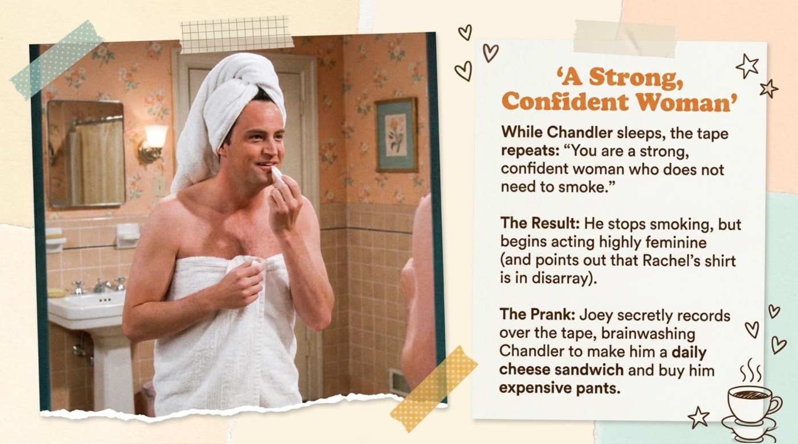
The lesson shows the tape’s repeated message: “You are a strong, confident woman who does not need to smoke.” Chandler does stop smoking, but he begins acting in a highly feminine way, and he points out that Rachel’s shirt “is in disarray.” The comedy then escalates. “Joey secretly records over the tape, brainwashing Chandler to make him a daily cheese sandwich and buy him expensive pants.” The prank works because the original message is so suggestible that a new one can replace it.
💡 Practical advice: Summarize any plot by identifying three elements: the trigger, the action, and the result. Chandler’s story contains all three in a few lines, which makes it an excellent exercise for short English summaries. Use the brainwashing joke as a reminder that repetition is powerful in language, whether it is used for comedy or for persuasion.
The lesson then gathers all three storylines in a matrix titled “The ‘Sitcom Dilemma’ Matrix.” Plot A is described as “Disapproving of family’s choice” with “An extreme 26-year age gap” as its catalyst, resolved through “Acceptance through true love.” Plot B lists “Distrusting extreme wealth” as its dilemma, with “A $20,000 diner tip” as its catalyst and “A romantic date in Rome” as its resolution. Plot C lists “Breaking a bad habit” as its dilemma, with “A sleep-learning audio cassette” as its catalyst and “Accidental brainwashing” as its resolution.
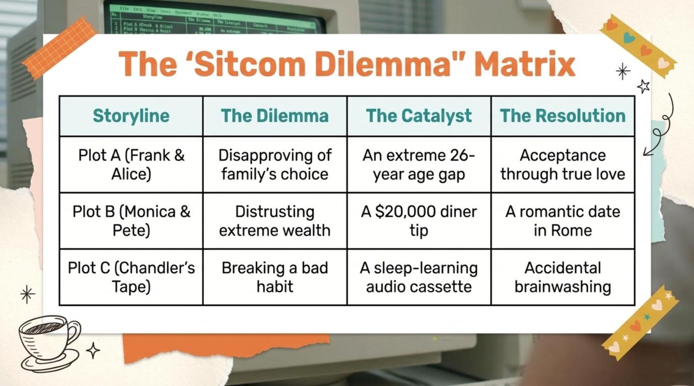
Reading the matrix as a whole reveals the sitcom formula. Each dilemma starts with a reasonable worry, each catalyst is an extreme detail, and each resolution produces an unexpected but satisfying outcome. When you retell any plot in English, you can follow this same order, and your summary will sound organized from the first sentence.
📚 Vocabulary and Language Takeaways
The vocabulary in this lesson concentrates on a small set of phrases. Each one is easy to recognize, yet learners often hesitate to use them. It is important to understand that idioms are fixed expressions, so you must learn their whole structure rather than swapping in synonyms. The lesson presents the core vocabulary on a notebook page, and each entry below follows the same pattern for clarity.
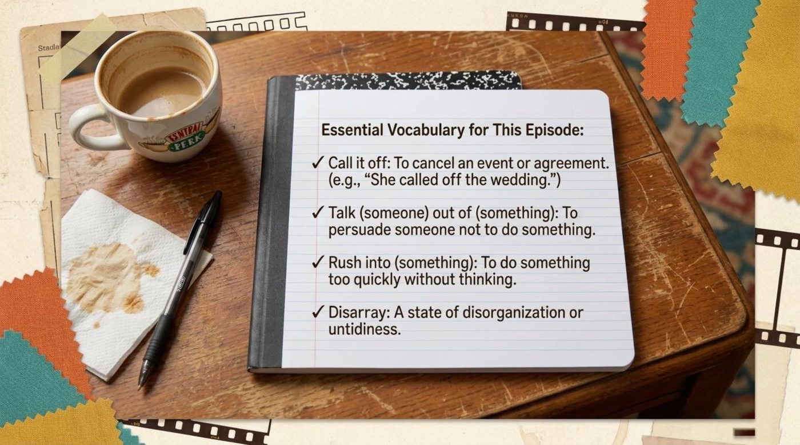
1. Call it off
Literal meaning: The word call suggests speaking loudly or telephoning, and off means away or finished. Taken word by word, the phrase points toward announcing that something has ended.
Figurative meaning: To cancel an event or an agreement.
Example from the material: “She called off the wedding.” This sentence describes a major decision that ends a planned future. The lesson uses it to show how the phrase works with a noun object placed between called and off, and the idioms exercise repeats the pattern as “She called it off.”
How the material explains this vocabulary: The notebook page defines the phrase as “To cancel an event or agreement.” The definition is short, which helps you remember it. Notice that the phrase carries the full meaning of cancellation, so you do not need to add extra words in your own sentences.
2. Talk (someone) out of (something)
Literal meaning: To use speech to move a person away from a position or decision. The idea of movement is hidden inside the preposition out of.
Figurative meaning: To persuade someone not to do something.
Example from the material: “Phoebe asks her friends Ross and Joey to talk Frank out of the marriage.” Here, Phoebe wants her friends to use persuasion to stop a wedding. The sentence follows the pattern talk + someone + out of + something, which is the pattern you should copy.
How the material explains this vocabulary: The notebook page gives the meaning as “To persuade someone not to do something.” The plot then shows the phrase in action, and the failure of Phoebe’s plan is part of the lesson. Persuasion sometimes backfires, which is why the phrase is so useful in storytelling.
3. Rush into (something)
Literal meaning: To hurry forward into a place, a situation, or a commitment. The word rush suggests speed, and into suggests entering.
Figurative meaning: To do something too quickly and without careful thought.
Example from the material: “Don’t rush into anything.” This line appears in the idioms exercise as advice. The speaker is not describing a past event but recommending patience, which shows how the phrase can be used in an instruction.
How the material explains this vocabulary: The notebook page defines it as “To do something too quickly without thinking.” The definition includes the reason for the warning, which is the lack of thought. When you use this phrase, you are usually suggesting that someone slow down.
4. Disarray
Literal meaning: The prefix dis- reverses the idea of an orderly array, which is an arrangement. The noun therefore describes the loss of arrangement.
Figurative meaning: A state of disorganization or untidiness, which can apply to rooms, plans, or appearances.
Example from the material: “Points out that Rachel’s shirt is in disarray.” Chandler notices the disorder in Rachel’s clothing, and the comic moment depends on the sudden shift in his attention. The phrase in disarray is the standard way to describe such a state.
How the material explains this vocabulary: The notebook page defines the word as “A state of disorganization or untidiness.” Notice that the word is a noun, and that it is commonly used with the preposition in.
5. Encourage (this behavior)
Literal meaning: The prefix en- means to put into or make, and courage comes from the Latin word for heart. Literally, to encourage someone is to give that person heart.
Figurative meaning: To support, promote, or make more likely, often when the thing being supported is something undesirable.
Example from the material: “I don’t want to encourage this behavior.” The line appears in the idioms exercise, where it illustrates a speaker who refuses to approve a habit without being rude.
How the material explains this vocabulary: The idioms exercise presents the sentence as an example rather than a formal definition. The meaning above is therefore based on the context of the line and on the word’s structure, so you can trust it as a working explanation.
Idioms in Action
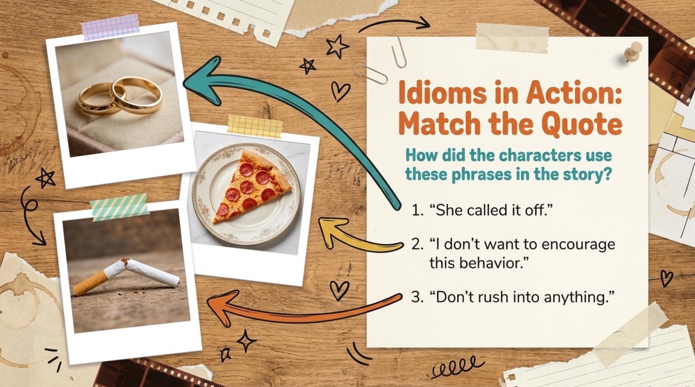
The idioms exercise asks learners to match three quotations to the storylines, and it encourages you to think about how the characters used each phrase. The three lines are “She called it off.”, “I don’t want to encourage this behavior.”, and “Don’t rush into anything.” The photographs of wedding rings, pizza, and a broken cigarette link each phrase to a visual memory. This pairing is a clever way to make abstract vocabulary concrete.
Connect the vocabulary to the theme. Call it off and talk out of belong to the wedding plot, where promises and marriages are at stake. Rush into appears in advice that warns against hasty commitments, which is the central lesson of Plot A and Plot B. Disarray captures the comic chaos of Plot C, where the cassette and the prank leave everyone in a mess. Every phrase, therefore, carries a piece of the episode’s emotional structure.
Flip-Card Review
The cards below work as a review tool for the vocabulary. Click or press Enter on a card to see its literal meaning, its contextual meaning, an example from the material, and a short note on why the phrase matters.
💡 Deeper Meaning: Metaphors and Symbols
Beyond the plot mechanics, the material offers several recurring images and metaphors. Each one becomes a useful lens for understanding the episode, and each one can help you describe ideas in English with more precision.
The Cassette: Suggestion as a Hidden Force
The hypnosis cassette is the central symbol of Plot C. The lesson labels the storyline “The Quit-Smoking Tape (Habits & Hypnosis),” and the matrix describes its dilemma as “Breaking a bad habit.” The cassette represents the promise of a quick fix. It arrives in a small, ordinary object, and it claims to change a person while he sleeps. The lesson’s own interpretation, “Accidental brainwashing,” reveals the danger: a shortcut can change more than we intend.
This symbol enhances understanding because it turns an abstract idea into a physical object. When you learn English, you may also look for shortcuts. The cassette reminds you that repetition and attention shape habits, but the message you repeat must truly serve your goals.
The $20,000 Check: Money as a Misread Message
The diner check is the central image of Plot B. The lesson presents it through the matrix’s interpretation of Monica’s dilemma: “Distrusting extreme wealth.” Money, in this storyline, is a language that Monica cannot read correctly. She assumes that the message says I want to buy you, while Pete means something closer to I want to know you. Only the admission that “he just didn’t know how to ask her on a date” translates the message accurately.
This metaphor enhances understanding because it shows how context changes meaning. A large sum can signal generosity, insecurity, or romance, depending on who is speaking and why. Learners can apply the same caution to words, which can carry different meanings depending on tone and situation.
The Power of Love: A Speech That Overturns Objections
In Plot A, love operates almost like a force of nature. The lesson’s resolution, “The Power of Love,” describes a speech so passionate that the friends change their minds instantly. Joey’s reaction, “Their love is so pure,” frames sincerity as something that can move even skeptical listeners. The matrix summarizes the resolution as “Acceptance through true love.”
This metaphor is significant because it exaggerates a real truth: emotional sincerity influences people more than cold arguments do. The episode is comic, but its underlying idea helps learners see why persuasive English relies on feeling as well as logic.
Central Perk: The Stage Where Ordinary Language Lives
The Central Perk café appears on the title card and throughout the visual lesson. The lesson presents the entire material as “A Visual Lesson in 90s Sitcom Storytelling,” and the café is the stage where that storytelling happens. Coffee cups, sofas, and warm light create a space where people talk, confess, and argue every day. The café is therefore a metaphor for the everyday conversations in which English is truly learned.
This symbol enhances understanding because it reminds you that the best English lessons take place in familiar settings. You do not need a dramatic plot to practice. A coffee order, a shared joke, or a short disagreement can provide everything you need to rehearse new phrases.
🎯 Comprehension Check
The lesson closes its reading material with a short check of comprehension and vocabulary. Work through the quiz below before you read the reflection that follows. Each answer receives immediate feedback, and the explanation clarifies why the correct choice matters.
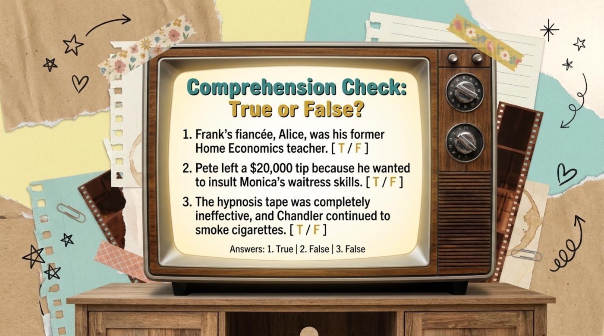
Test Your Understanding
Select one answer for each item. Feedback appears immediately, and your score updates as you go.
FINAL SCORE
The lesson’s short-response section challenges learners to test their memory and explain their reasoning. Three model answers appear below, and each one can be expressed in your own words.
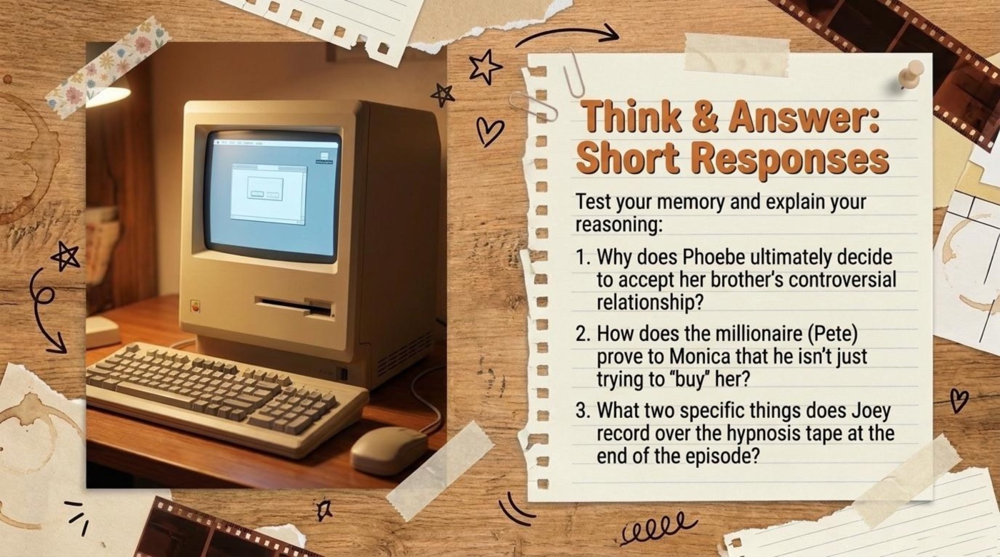
Phoebe ultimately accepts her brother’s relationship because Frank’s speech about true love changes the way she and her friends see the situation. The emotional argument outweighs the initial horror. Pete proves that he is not simply trying to buy Monica when he tears up the check and admits that he did not know how to ask her on a date. Joey records two specific things over the hypnosis tape: a daily cheese sandwich and expensive pants.
🌟 Final Thoughts
The most inspiring line in the material is also the most playful. The tape repeats, “You are a strong, confident woman who does not need to smoke.” In context, the sentence is a comic weapon, yet it reveals a genuine principle. Repeated, positive language can shape behavior, and that principle applies to learning English as much as it applies to breaking a habit.
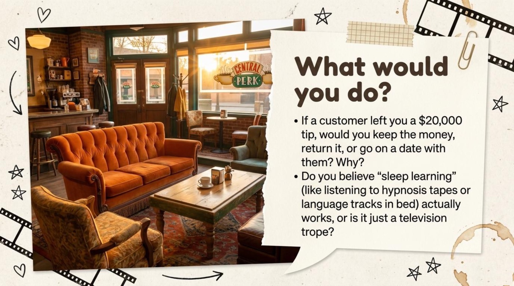
The final page of the lesson turns from the story to the learner. Its closing discussion invites you to decide what you would do with a $20,000 tip and to judge whether sleep learning truly works, or whether it is merely a television trope. The main takeaway for language learners is clear: stories are a laboratory for language and judgment, and every plot can teach you how people think, argue, and choose words.
📌 Your next step: Choose one of the three plots and retell it aloud in your own words, using all four key phrases. Then rewatch the episode, pause at each idiom, and write one original sentence for every phrase. Finally, answer the closing discussion prompts in a short paragraph, because speaking and writing your reasoning is the fastest way to make new vocabulary your own.
📎 Lesson Files
Open the lesson file in a new tab: